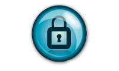
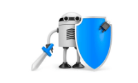

Introduccion

Por más de cincuenta años se han explorado respuestas al reto de la protección de la información desde la perspectiva técnica, técnico-social, matemático formal, entre otras, las cuales han ofrecido vistas particularmente interesantes, motivando reflexiones que han sido capitalizadas en productos o servicios que hoy son parte integral de las prácticas de las organizaciones modernas.
Los tipos de amenazas más comunes son

•Ransomware: Cyberdelincuencia que por medio de huecos de seguridad penetra en tus dispositivos ya sea servidores o máquinas secuestrando la información a cambio de una cantidad monetaria o bitcoins..
•Malware: Programas maliciosos que “infectan” a otros archivos del sistema con la intención de modificarlo o dañarlo. Dicha infección consiste en incrustar su código malicioso en el interior del archivo a fin de que se propague rápidamente.
•Espionaje de datos personales: Gracias a la economía digital, los datos más importantes se encuentran en nuestros dispositivos móviles por lo que permite que sean más vulnerables a ataques cibernéticos.
•El “Ataque CEO” Consiste en recabar información de las personas que tienen acceso a cuentas monetarias o información de la empresa, ya sea por redes sociales o móviles, una vez que se estudia a la víctima se puede engañar por medio de pishing es decir una página falsa de alguna empresa reconocida o inclusive engañando a la víctima para que transdiera sumas de dinero pensando que es para proveedores.
•Ataques DDos: Estos ataques son cada vez más comunes por organizaciónes o grupos que boicotean páginas por alguna causa, competencia o simple diversión, consiste en mandar múltiples peticiones al sitio web con la final de tumbarlo, debido a que el sitio al recibir tantas termina por caerse.
Tipos de Seguridad Informatica
Seguridad de Hardware.
La seguridad de hardware se puede relacionar con un dispositivo que se utiliza para escanear un sistema o controlar el tráfico de red. Los ejemplos más comunes incluyen cortafuegos o firewalls de hardware y servidores proxy. Otros ejemplos menos comunes incluyen módulos de seguridad de hardware (HSM), los cuales suministran claves criptográficas para funciones críticas tales como el cifrado, descifrado y autenticación para varios sistemas. De entre los diferentes tipos de seguridad informática.
Seguridad de Software.
La seguridad de software se utiliza para proteger el software contra ataques maliciosos de hackers y otros riesgos, de forma que nuestro software siga funcionando correctamente con este tipo de riesgos potenciales. Esta seguridad de software es necesaria para proporcionar integridad, autenticación y disponibilidad. Entre los tipos de seguridad informática.
Seguridad de red
La seguridad de red se refiere a cualesquiera actividades diseñadas para proteger la red. En concreto, estas actividades protegen la facilidad de uso, fiabilidad, integridad y seguridad de su red y datos. La seguridad de red efectiva se dirige a una variedad de amenazas y la forma de impedir que entren o se difundan en una red de dispositivos. ¿Y cuáles son las amenazas a la red? Muchas amenazas a la seguridad de la red hoy en día se propagan a través de Internet. Los más comunes incluyen.
Virus, gusanos y caballos de Troya, Software espía y publicitario, Ataques de día cero, también llamados ataques de hora cero, Ataques de hackers, Ataques de denegación de servicio, Intercepción o robo de datos y Robo de identidad
Porque es Importante la SI
La seguridad informática como el proceso de prevenir y detectar el uso no autorizado de un sistema informático. Implica el proceso de proteger contra intrusos el uso de nuestros recursos informáticos con intenciones maliciosas o con intención de obtener ganancias, o incluso la posibilidad de acceder a ellos por accidente. La seguridad informática es en realidad una rama de un término más genérico que es la seguridad de la información, aunque en la práctica se suelen utilizar de forma indistinta ambos términos.
Medidas de SI
Según diversos estudios en los últimos cuatro años los ataques para robar información de las empresas han aumentado 46%, y en México el 60% de las empresas tiene problemas por fugas internas de información.
Con estas cifras, sin duda, una de las principales preocupaciones de dueños, inversionistas, directores y empleados de las compañías es tomar las medidas de seguridad informática adecuadas para proteger los datos del negocio.